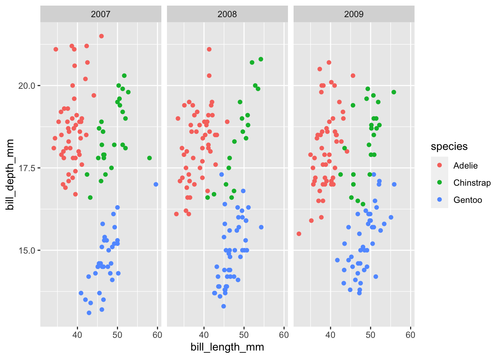
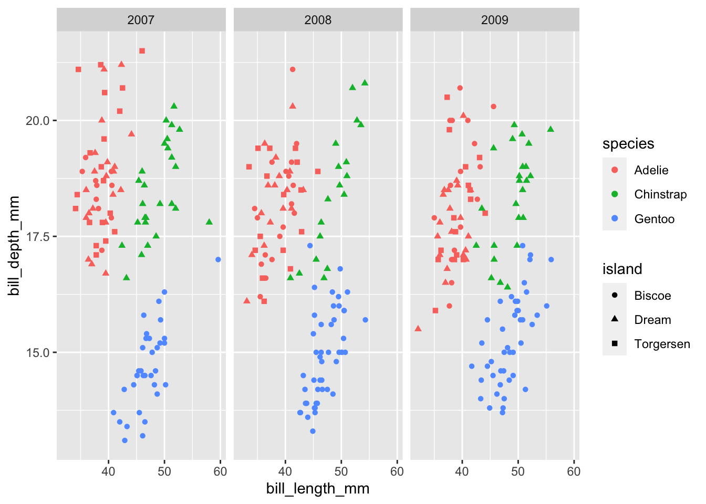

6 The shape of your data
When you plot, you only get so many dimensions.
You really want to use 2-4 (maybe 5) dimensions to keep things. So when you are writing an academic paper you are generally the arbiter of “what is important” by selecting these dimensions.
## # A tibble: 6 × 8
## species island bill_length_mm bill_depth_mm flipper_length_mm body_mass_g
## <fct> <fct> <dbl> <dbl> <int> <int>
## 1 Adelie Torgersen 39.1 18.7 181 3750
## 2 Adelie Torgersen 39.5 17.4 186 3800
## 3 Adelie Torgersen 40.3 18 195 3250
## 4 Adelie Torgersen NA NA NA NA
## 5 Adelie Torgersen 36.7 19.3 193 3450
## 6 Adelie Torgersen 39.3 20.6 190 3650
## # ℹ 2 more variables: sex <fct>, year <int>Two dimensions
## Warning: Removed 2 rows containing missing values (`geom_point()`).
## Warning: Removed 2 rows containing missing values (`geom_point()`).
But, if we want to share and explore all di
ggplot(penguins, aes(x = bill_length_mm, y = bill_depth_mm,
color = species)) +
geom_point() +
facet_grid(~year)## Warning: Removed 2 rows containing missing values (`geom_point()`).
Maybe you could squeeze one more in there, but at this point you’ve kind of lost me
ggplot(penguins, aes(x = bill_length_mm, y = bill_depth_mm,
color = species, shape = island)) +
geom_point() +
facet_grid(~year)## Warning: Removed 2 rows containing missing values (`geom_point()`).
BOOKMARK: IN GGPLOT, EACH DIMENSION IS ITS OWN COLUMN
So when we communicate data we have this tension between sending simple messages with figures while not simplifying/keeping the complexity of the data.
This is part of allowing a user/viewer to personalize what they see. “Choose your own adventure” type of approach.